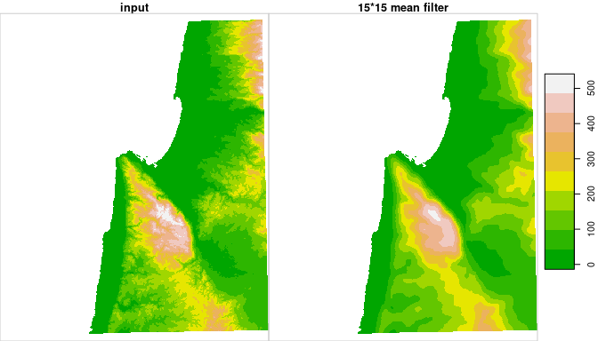
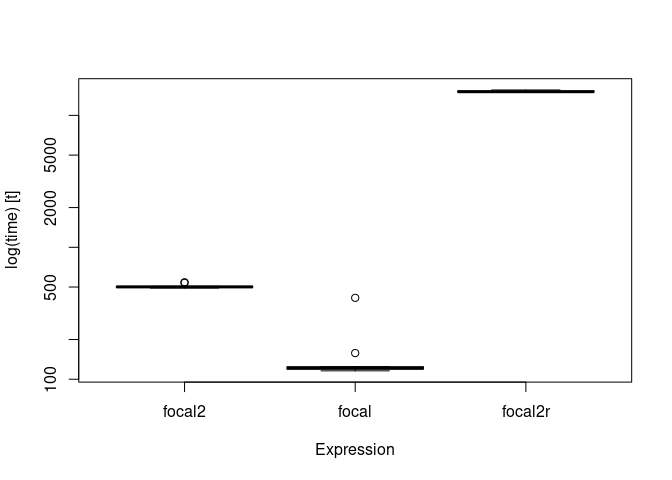

R package starsExtra provides several miscellaneous functions for working with stars objects, mainly single-band rasters. Currently includes functions for:
- Focal filtering
- Detrending of Digital Elevation Models
- Calculating flow length
- Calculating the Convergence Index
- Calculating topographic aspect
Installation
CRAN version:
install.packages("starsExtra")
GitHub version:
install.packages("remotes") remotes::install_github("michaeldorman/starsExtra")
Usage
Once installed, the library can be loaded as follows.
library(starsExtra) #> Loading required package: sf #> Linking to GEOS 3.6.2, GDAL 2.2.3, PROJ 5.2.0 #> Loading required package: stars #> Loading required package: abind
Example
The following code applied a 15*15 mean focal filter on a 533*627 stars Digital Elevation Model (DEM):
data(carmel) carmel_mean15 = focal2( x = carmel, # Input 'stars' raster w = matrix(1, 15, 15), # Weights fun = "mean", # Aggregation function na.rm = TRUE, # 'NA' in neighborhood are removed mask = TRUE # Areas that were 'NA' in 'x' are masked from result )
The calculation takes: 0.2358196 secs.
The original DEM and the filtered DEM can be combined and plotted with the following expressions:
r = c(carmel, carmel_mean15, along = 3) r = st_set_dimensions(r, 3, values = c("input", "15*15 mean filter")) plot(r, breaks = "equal", col = terrain.colors(10), key.pos = 4)

Timing
The following code section compares the calculation time of focal2 in the above example with raster::focal (both using C/C++) and the reference method starsExtra:::focal2r (using R code only).
library(microbenchmark) library(starsExtra) library(raster) #> Loading required package: sp data(carmel) carmelr = as(carmel, "Raster") res = microbenchmark( focal2 = focal2(carmel, w = matrix(1, 15, 15), fun = "mean", na.rm = FALSE), focal = focal(carmelr, w = matrix(1, 15, 15), fun = mean, na.rm = FALSE), focal2r = starsExtra:::focal2r(carmel, k = 15, mean), times = 10 ) res #> Unit: milliseconds #> expr min lq mean median uq max #> focal2 201.5447 206.3138 248.3988 228.6944 299.8767 309.1590 #> focal 120.3913 122.4506 146.6245 126.1919 131.8618 302.1532 #> focal2r 14149.8486 14464.7892 14771.0747 14752.4548 15128.0667 15462.0797 #> neval cld #> 10 a #> 10 a #> 10 b
boxplot(res)
